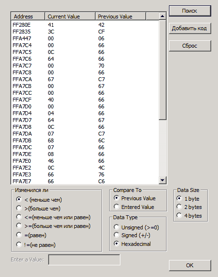
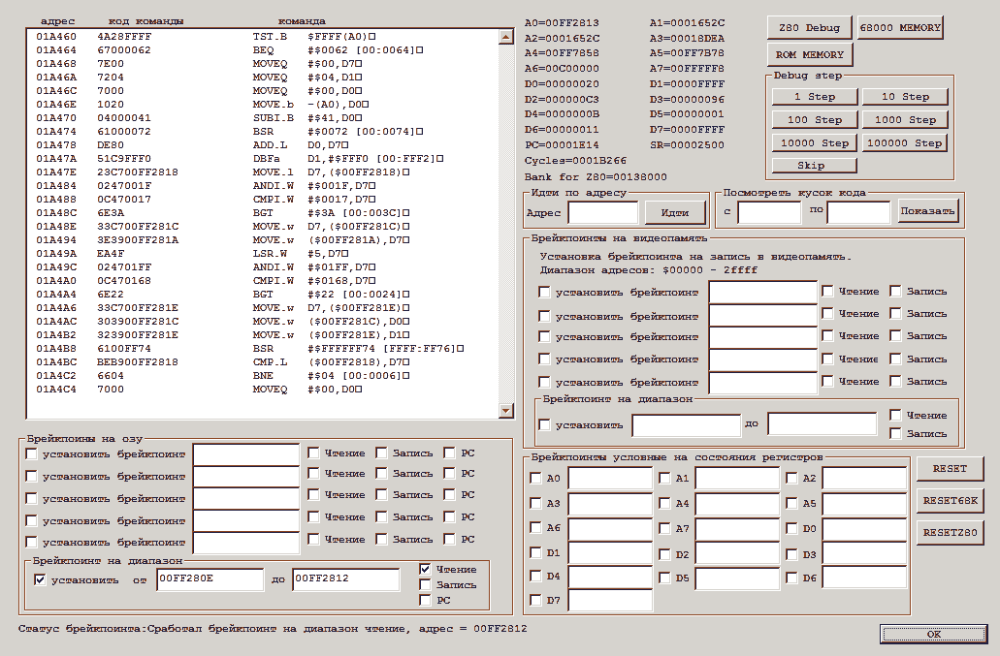
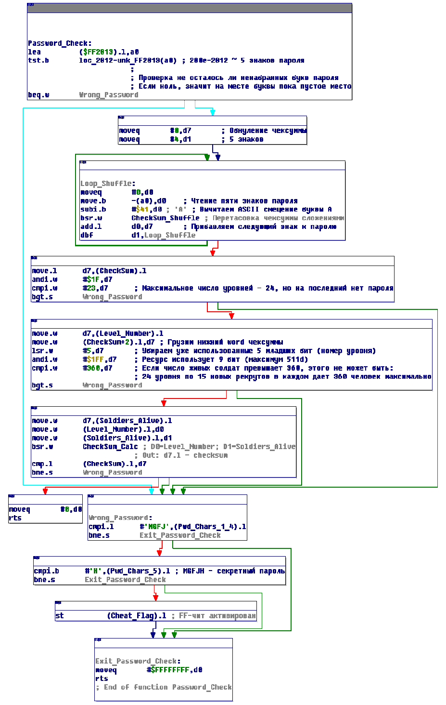
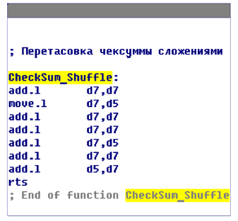
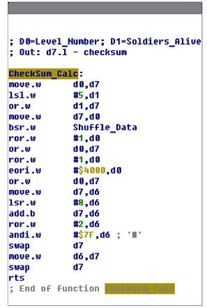
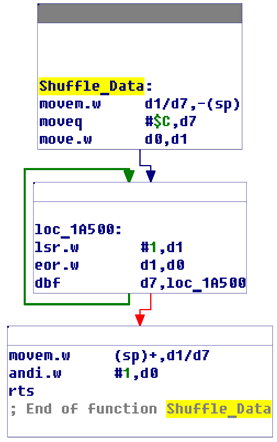
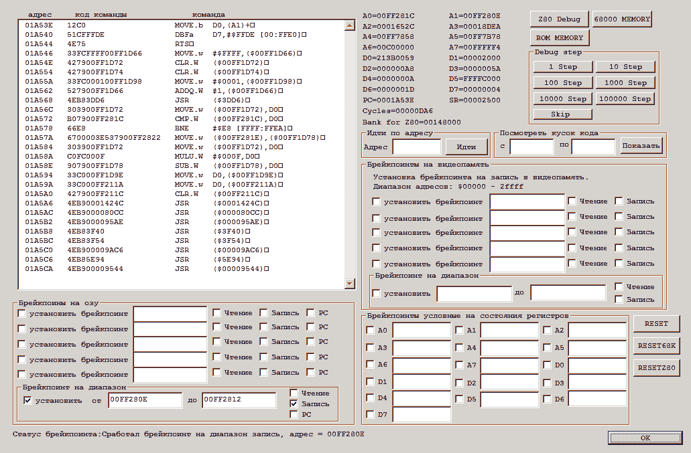
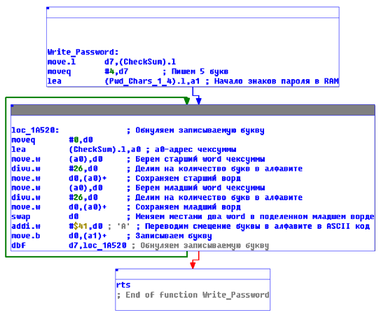
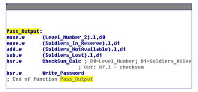

В этом документе нам понадобятся:
Сразу нужно сказать, что процесс исследования систем паролей Сеги почти не отличается от NES. Разница лишь в инструментах.
Итак, как и в доке по паролям на NES, сначала мы должны найти пароль в оперативной памяти. Тут нам и пригодится поиск читов в Gens VKNTracer: открываем наш ROM, переходим на экран ввода пароля и открываем CPU -> Debug -> Поиск-кодов. Для удобства можно выставить Data Type: Hexadecimal. Так как мы ищем одну букву, наверное, она не будет занимать больше одного байта в памяти, поэтому Data Size: 1 byte. Нажимаем ‘Сброс’ и в левом окне у нас появляются все ячейки оперативной памяти, среди которых сейчас находится и ячейка с первой буквой пароля, которую мы будем искать. Жмём ОК, а через некоторое время открываем окно поиска читов снова. Так как мы не меняли значение первой буквы пароля, ячейка, которая ее содержит, не изменилась. Смело выставляем =(равен) и жмем поиск. Пока это не заметно, но часть ячеек, значения которых поменялись с момента первого вызова окна поиска читов, уже отброшена и зона поиска заметно снизилась. Теперь сделаем первой буквой пароля ‘B’. Опять вызываем окно поиска читов и, так как, код буквы, скорее всего, увеличился на единичку, выставляем >(больше чем) и жмем поиск. Увеличивая и уменьшая первую букву, легко добиться отсечения всех ненужных нам ячеек:

Ячейка 0xFF280E выглядит очень подозрительно. Во-первых, она изменилась только на единичку, как и наша буква. А во-вторых, значение 0x41 соответствует коду буквы ‘A’ в кодировке ASCII. Чтобы убедиться наверняка, откроем просмотрщик памяти: CPU->Debug->Genesis Main 68k RAM, и найдем адрес 0x280E. Оставив просмотрщик в фоне, перейдем в окно эмулятора и поизменяем значения разных букв пароля. Тут уж сомнений не остается: по адресам в оперативной памяти 0x280E - 0x2812 расположены наши пять знаков пароля. Еще мы узнали, что все буквы содержатся в кодировке ASCII и, если буква еще не набрана, в ячейке будет ноль.
Чтобы теперь нам найти алгоритм проверки пароля, поставим останов на чтение из этого диапазона: CPU -> Debug -> Genesis Main 68k Debugger:

Выставляем останов, нажимаем ОК и проверяем введенный пароль в игре (пусть даже неверный). Игра останавливается по адресам 0x01A460 и 0x1A46E. Наверное, это и есть процедура проверки пароля, которая после прочтения значений букв говорит, правильный это пароль или нет. Но изучать эту процедуру в отладчике сплошное мучение.После загрузки ROM’а в IDA и распознания кода по адресу 0x01A460, получаем чистую и довольно понятную процедуру проверки:
 Где

и

где

Итак, что мы видим из этой процедуры? Игра берет 5 знаков пароля, затем по определенной, не имеющей почти никакого математического смысла, процедуре из знаков пароля рассчитывает чексумму пароля. Из младших битов чексуммы находятся номер уровня и число оставшихся в живых солдат (эти две величины проверяются на превышение максимальных значений). Затем из этих двух величин рассчитывается вторая чексумма, которую должен иметь правильный пароль с таким номером уровня и таким числом солдат. Если он совпадает с первой чексуммой, значит пароль верный. Процедура возвращает в регистре d0 ноль. Если хотя бы одно из условий верности пароля не выполняется (номер уровня больше 23, число солдат больше 360 или чексуммы паролей не совпали), процедура возвращает -1 в d0. Особенно интересен конец процедуры:
ROM:0001A4C8 cmpi.l #'MGFJ',(Pwd_Chars_1_4).l
ROM:0001A4D2 bne.s Exit_Password_Check
ROM:0001A4D4 cmpi.b #'H',(Pwd_Chars_5).l ; MGFJH - секретный пароль
ROM:0001A4DC bne.s Exit_Password_Check
ROM:0001A4DE st (Cheat_Flag).l ; FF-чит активированЭто же явная проверка на определенный пароль (MGFJH)! Из процедуры видно, что даже, если введенный пароль MGFJH, игра напишет Invalid Code, но перед этим выставит флаг включения чита в определенной ячейке памяти. Метод поиска того, что же делает этот пароль остается за рамками данного документа. На самом деле, после введения этого пароля, если во время битвы выбрать белый флаг, миссия будет пройдена, а не провалена, как это обычно бывает. На момент написания документа (ноябрь 2008 года), Интернет об этом пароле не знает.
Что еще мы можем выудить из этой процедуры? Ну, можно написать небольшой брутфорс, который бы перебирал все пароли по порядку, начиная от AAAAA и заканчивая ZZZZZ, проверял их по этому алгоритму и выводил только те, что прошли проверку. Реализацию подобного алгоритма и исходники на паскале можно взять здесь.
Кстати, тут можно сразу проверить известный портал GameFaqs на ноябрь 2008:
Passwords
NTSC Passwords
Enter these on the load screenPassword Effect
UTEFD 10
***
MMVI 24
***
PXJND Level 1Contributed By: AlaskaFox
PAL Passwords
Levels 1-9 have the same passwords as the NTSC version.Password Effect
YJKCF 10
***
GWZED 22Contributed By: AlaskaFox
Know Something We Don’t?
Да уж, мы точно знаем что-то, чего не знаете Вы… Непонятно о каких PAL и NTSC паролях идет речь - судя по результатам работы брутфорса, это все пароли одной версии (а ведь другой-то и нет), просто с разным количеством солдат. Видимо 1-9 уровни, AlaskaFox проходил с одними и теми же потерями, а потом потери стали различаться и пароли на те же уровни тоже. Что это за четырехзначный пароль на 24 уровень? Мы-то уже знаем, что любой пароль на 24 уровень, даже если у него будет правильная чексумма, игра признает неправильным.
Ну и напоследок, можно взять попробовать реверснуть саму процедуру с целью написания генератора паролей. Есть, конечно, люди, которые могут и Triple RSA закейгенить, но я не из таких (к сожалению). Куда проще найти процедуру, которая выводит сделанный игрой пароль на экран и просто записать ее на языке высокого уровня.
Зайдя на экран вывода готового пароля, выясняем, что ячейки, в которых хранятся буквы пароля, не изменились (0x280E - 0x2812). Поэтому поставим останов на запись в этот диапазон и войдем на экран вывода пароля:

Игра вывалилась по адресу 1A53E - это процедура записи готового пароля в ячейки:

Видно, что процедуре через регистр d7 передается чексумма будущего пароля. Если посмотреть на возможные места вызова этой процедуры (в отладчике или просто анализируя участки кода выше), натыкаемся на такое место:

Где встречаем уже знакомую нам процедуру CheckSum_Calc.Теперь у нас есть все, чтобы без проблем написать генератор паролей для игры. Исходники генератора на Паскале можно посмотреть здесь.А страничка со скриптом, вычисляющим пароли, как всегда, здесь.
Напоследок, почему рекомендуется оформлять генератор паролей в виде .html страницы:
К тому же, исходник скрипта любопытствующие смогут всегда увидеть в исходном коде страницы.
© Copyright 2020, Griever